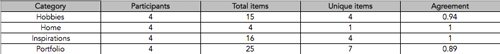
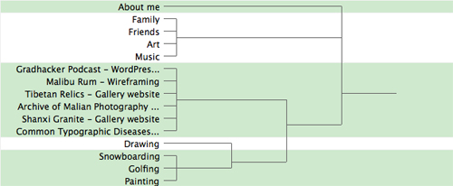
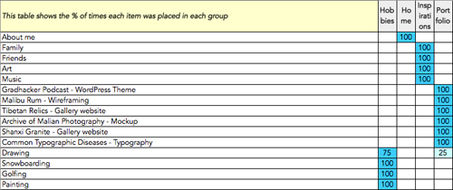
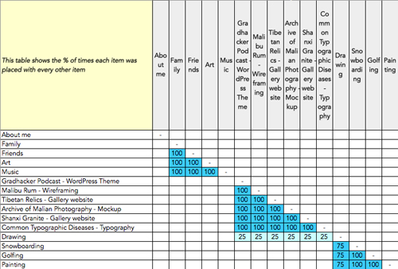

THE STUDY
I was asked to create a usability study for the site, My Site. The study touches on several aspects of the site's navigational design, essentially the main pages of the site (home, hobbies, inspirations, and portfolio). Specifically, for the purposes of this study, I look at how users take the information included within each of these pages and rearrange them in a way that is logical and makes the most sense to them.
CATEGORIES SUMMARY
From the spreadsheet above, we can conclude the following information.
- There was a total of 4 participants in this study.
- Total items per category ranged from 4 ~ 25.
- Unique items per category ranged from 1 ~ 7.
We can also conclude...
- Of the 4 participants, there was an agreement 94% of the time when it came to placing topics in the "hobbies" page.
- Of the 4 participants, there was an agreement 100% of the time when it came to placing topics in the "home" page.
- Of the 4 participants, there was an agreement 100% of the time when it came to placing topics in the "inspirations" page.
- Of the 4 participants, there was an agreement 89% of the time when it came to placing topics in the "portfolio" page.
The results show that the participants were almost completely in agreement across the board when it came to deciding where topics fell and into which categories. Average agreement was an astounding 96%.
TREE GRAPH
Using an average linkage clustering method I came up with a tree diagram calculating the distance between clusters in a hierarchical cluster analysis. The linkages, in this case shown in 5 groups, are shown in a green highlight.
The linkages illustrate the grouping of topics by each of the participants.
CATEGORIES x ITEMS
This table further illustrates the percentage at which each topic is placed in a certain category (page). From this table of participant responses, we can conclude the following:
- Hobbies
- Painting, golfing, snowboarding, and drawing drew high responses among participants for this category at 75 ~ 100%.
- Home
- Participants chose about me overwhelmingly at 100% for this category.
- Inspirations
- Family, friends, art, and music showed an incredibly strong correlation to this category with participants choosing it 100% of the time.
- Portfolio
- Gradhacker Podcast, Malibu Rum, Tibetan Relics, Archive of Malian Photography, Shanxi Granite, Common Typographical Diseases all showed up 100% by participants for this category.
ITEMS x ITEMS
This chart shows the correlation of topics as they were placed with other topics and the popularity at which participants placed them together.
CONCLUSION
I found that almost 100% of the time topics were chosen by the participants of this study as they had been laid out on the website.
That said, the study, although insightful, would have been more helpful had participants had the option of adding to the topics and/or categories.
Being the designer of the site, I found myself agreeing with most of what had been laid out. The site could use more information (content)